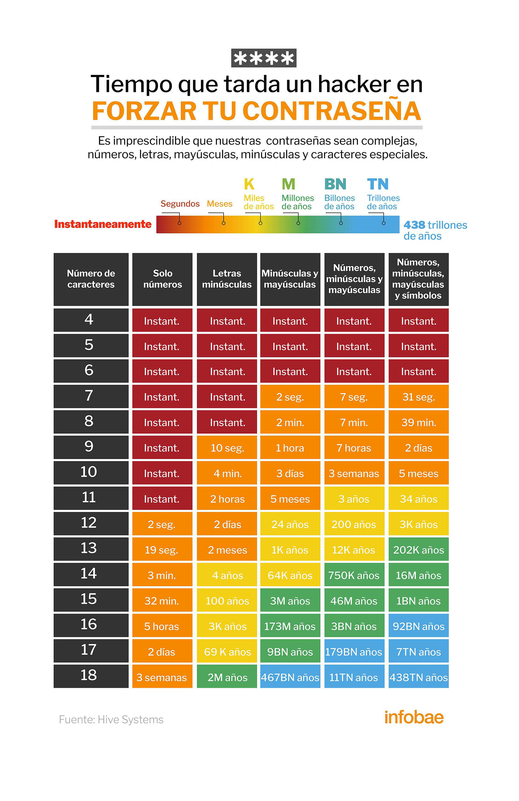

InfoTecnoGlobal
Por Benjamin Javier Bodrero | 3 de junio de 2025
Cuánto tiempo le toma a un hacker robar tu contraseña
Con el avance imparable de la tecnología, el debate sobre la seguridad de las contraseñas cobra cada vez más relevancia. El análisis de los métodos de protección más utilizados y su resistencia frente a intentos de violación ha llevado a la creación de herramientas como la Tabla de Contraseñas de la empresa de ciberseguridad Hive Systems, que en su última versión, la 2024, incorporó cambios importantes. Desde su creación en 2020, la Tabla de Contraseñas se convirtió en una referencia esencial para entender el tiempo necesario para vulnerar contraseñas mediante ataques de fuerza bruta, cuando los hackers prueban todas las combinaciones posibles con la esperanza de adivinar la combinación correcta.

Cómo se calcula
Cómo se calcula
En 2020, los expertes de Hive Systems utilizaron para el análisis contraseñas protegidas con el algoritmo MD5 y un hardware modesto: una sola tarjeta gráfica RTX 2080. Sin embargo, para 2024, los avances tecnológicos obligaron a actualizar tanto el hardware como los métodos de protección. Actualmente, se emplean 12 GPUs RTX 4090 para medir el tiempo necesario para quebrar contraseñas protegidas con bcrypt, configurado a 32 iteraciones.